Use Case 1
Scene 1 - Identification
Control room operator observes a NOx emission warning on the main boiler plant used to generate steam for process and district heating. The NOx level is at an intermediate warning level and does not exceed regulatory emission limits. The Operator takes immediate action to reduce steam output. They raise Operator Log Entries to record these, generate a near miss environmental incident and raise a Service Request to Maintenance to inspect the boiler control systems. Wilson navigates to the Operator Log from the Start Center and selects Shift1B. Show the Operator Log record and the Operator Log Entries. Show how the Operator can create records from a Log Entry and navigate to the Related Records tab to show the created Service Request and Incident.
Note
We can develop this scenario to provide the option of a Health/Predict generated event or an anomaly generated from a Watson model or Device input. (Next phase: In Monitor create a Device for a NOX sensor associated with Location BR400. Simulate Device data to create a NOx Alert (assume a threshold of 80 mg/NM3). We can show how an Operator can then create the Service Request from the Alert.)
Service Request for High Emission
I'm a Control Room Operator and I observed a Nitrogen Oxides (NOx) emission warning on the main boiler plant used to generate steam for process and district heating. The NOx level is at an intermediate warning level and does not exceed regulatory emission limits. I need to remedy the immediate situation and then record what happened here so that it is logged for future reference. First, I take immediate action and reduce the steam output on the boiler. Next, I raise Operator Log Entries to record these, generate a near miss environmental incident and raise a Service Request to Maintenance to inspect the boiler control systems.
Action: Open Maximo HSE, then select the Operator Log Application and search in the Navigation Bar for Operations> Operator log> Look for SHIFT1B Log
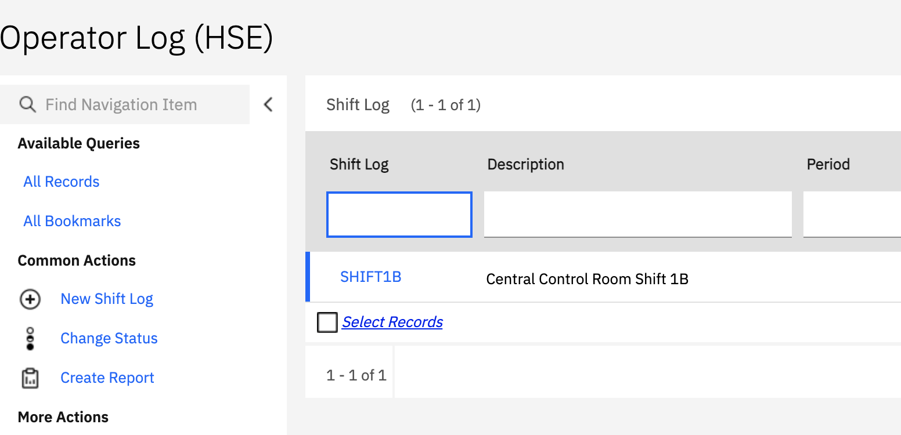
Action: Scroll down to Log Entry and see the three Logs entered by the Operator. Notice a high NOx warning on main boiler, reduced boiler steam, and high NOx warning on main boiler cleared. These were the 3 actions I took as soon as I saw the first warning. After reducing the boiler steam output, I saw the high NOx warning was cleared.
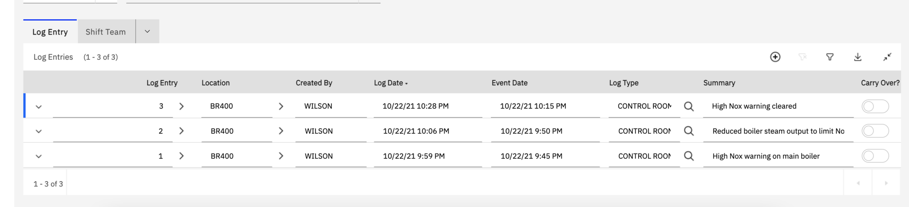
Even though the situation seems under control for now, I created a Service Request for this high NOx reading found to make sure it is investigated further. Another way to avoid future possible emissions is to log data records of near miss events as a leading indicator of future problems. To do this, I also created an incident record.
Action: Go to the Related Records tab and find the Service Request and incident for the high NOx warning. You can see that these have been correctly created, so now the Maintenance team will take it from here.
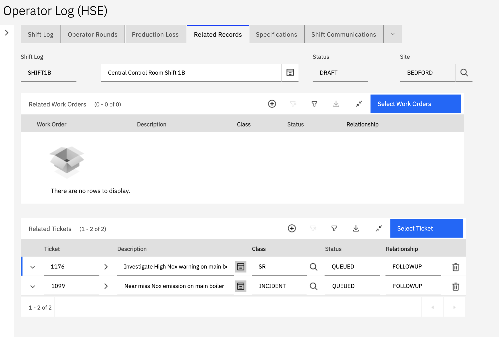
Now the Service Request is routed to the Maintenance Manager who will investigate this and take further action in Part 2.
Scene 2 - Inspection and Repair
Maintenance Manager receives the Service Request from Operations and recognises the potential for an emission event. They generate a high priority Inspection Work Order to check operation of the boiler control system linking it to an Inspection Form for a Fault Inspection. Because the boiler is in an area where gas may be present he links a Hot Work Permit to the Work Order and assigns the Work Order to Technician Eli. The Maintenance Manager approves the Work Order. Technician Eli receives the Work Order on his mobile device and his experience tells him that the most probable cause is an issue with the boiler controls. Having been issued a permit to work from Operations he goes to carry out an inspection of the control system. The Technician notices that the burner management settings were not correctly set during a recent boiler service. The Technician checks the setting with plant engineering (note this could be shown on Assist in future) and confirms that they should be restored to the documented settings. Eli then carries out this work, completes the Inspection Results and records the Problem Code on the Work Order documentation.
Part 2 - Work Order and Inspection
In Part 1, the Control Room Operator noticed a high NOx level, took action by lowering the steam output, and documented the near miss incident.
Now, the Maintenance Manager receives the Service Request from Operations and recognizes the potential for an emission event. Acting as the Maintenance Manager, we must generate a high priority Inspection Work Order to have a technician check the operation of the boiler control system. This high priority work order is assigned to the technician on their mobile device, and they obtain a permit to work from Operations to carry out an inspection of the control system.
Action: In Start Center (for the Maintenance Manager), open the the Nox warning Service Request. Show the SR details.
I see the description of the SR, the date, and the Priority levels. The Reported Priority was set as 3, but I will escalate the Internal Priority to 1 because it was a near miss emission that could have resulted in a fine.
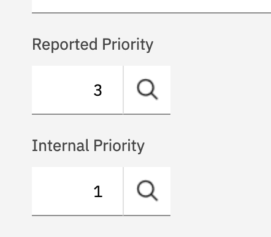
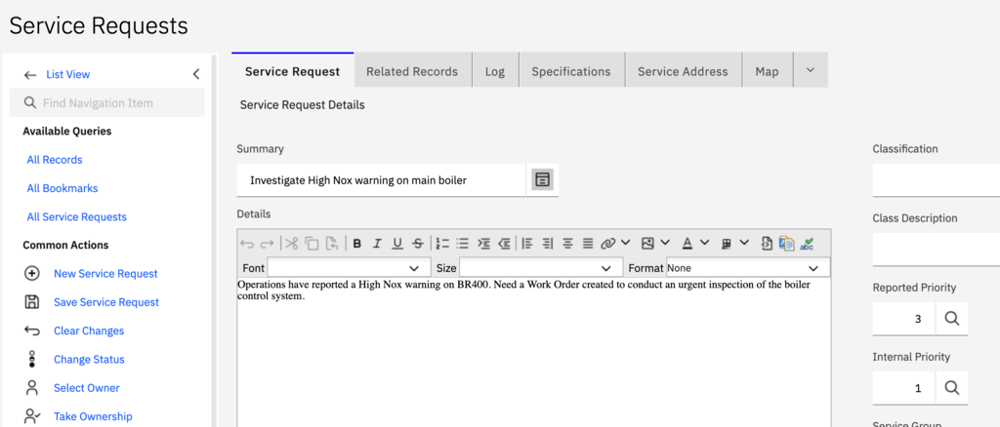
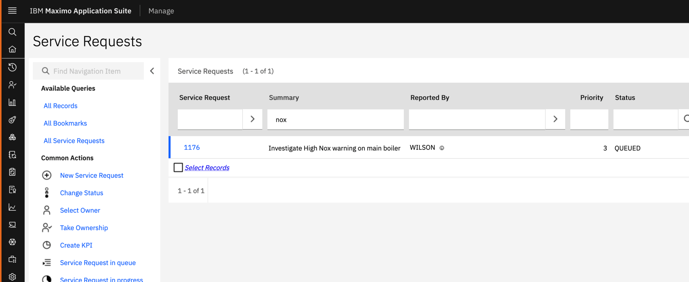
Action: Here is an example of the work order that the Maintenance Manager would need to create. Go to Related Records, see the Work Order. Then click more details > Go To > Work Order Tracking.
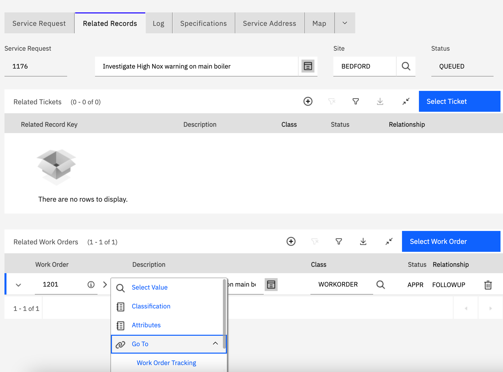
Attention
Now we are switching roles. Open your Maximo Mobile application.
Let's now act as the field technician who was assigned this work order to carry out an inspection of the control system.
I am Eli, the technician, I am going to complete a work order on the boiler to investigate the high NOx warning. I know from experience that the boiler control system is a likely source of this emission problem.
In the IBM Maximo Mobile application on my device, I open the My Schedule tile. Here, I can see all the work orders for the day in a list view or a map view.
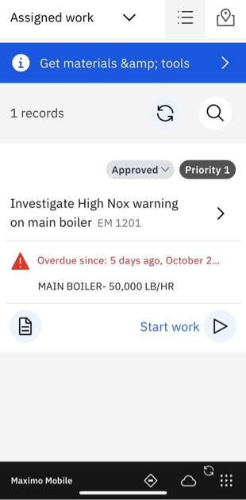
I see the work order sent over about the boiler control systems, and I can see it is of high priority, so I head over to start work on it.
Action: Choose the " Investigate High Nox Warning on main boiler" Work Order on the list
I can add a log, add or review my attachments, and complete my inspection from these touch-points
Action: Open Inspection in the work order and review the form.
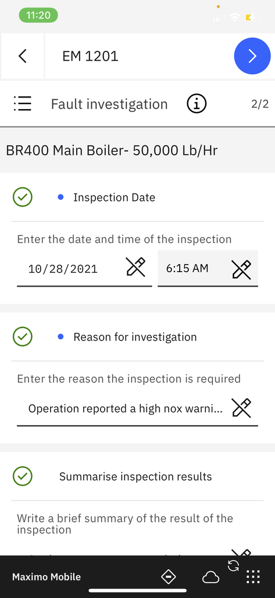
After completing the inspection, I spoke to the Maintenance team and reviewed the boiler control settings with engineering. You can see Wilson added a log documenting this conversation in the work order.
Action: Click the Open Log icon. Close and review the asset information.
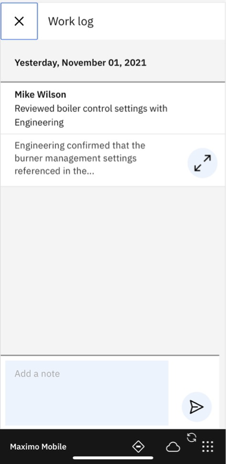
Action: Open Failure Reporting. Report Failure> Failure Class: Boiler Failures, Problem: Parameter Deviation
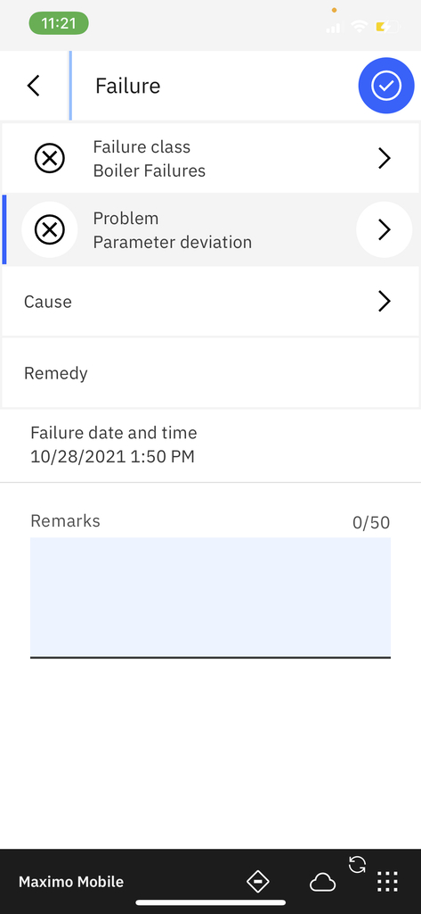
Action: Complete Work Order
During the inspection I found the burner controls of the boiler were not in line with the engineering specifications during a recent boiler service. I check the settings with Plant Engineering and confirm that they should be restored to the documented settings. They then carry out this work and complete the work order documentation.
Scene 3 - Investigation and Corrective Action
The Maintenance Manager reviews the results of the inspection and the near miss incident updating the Incident Log with the work carried out and referencing the Work Order as a related record to the incident. He then then creates an Investigation record from the Incident to carry out the root cause analysis. He transfers ownership of the Incident to the Environmental team within the HSE department. The Investigation is assigned to Environmental Officer Miller. An investigation meeting is called later that week with participation from Operations, Maintenance and HSE. It is agreed that a 5 Whys analysis technique should be used. This analysis identifies that the Job Plan for the burner management system service references out of date vendor documentation. Note: Also show Systemic Cause Analysis method. An Action Tracking record is raised to amend the Job Plan. The root cause analysis identifies that a change in the approval process for Job Plans should be made to include an engineering review. During the analysis operations identify that long term NOX emissions could be improved by introduction of a vendor update to the burner management system. An MOC Request record is raised to address this. This passes initial review and an MOC is generated which is circulated more broadly for review and approval. Show that the VP Operations and VP Sustainability are part of the review process for the MOC.
Part Three - Investigation, Analysis and Root Cause
In Parts 1 and 2, the potential emission has been handled and recorded. First, the Control Room Operator remedied the immediate issue and documented what happened. Next, the Maintenance Manager reviewed this and assigned a technician to do a follow-up investigation and inspection. Now, the investigation will be passed along to the HSE Environmental Team to do a root cause analysis to prevent further similar occurrences.
The technician noted the problem code as a parameter deviation, and the Maintenance Manager confirmed this with the work order. The work order has been tied to the incident by the Maintenance Manager and now Miller, the environmental officer from HSE, will have a queued incident awaiting for triage.
Action: Miller is the environmental officer, from his Start Center he will see the queued incident and will take ownership of the incident. He adds a regulation to the incident to make sure we are meeting compliance requirements.
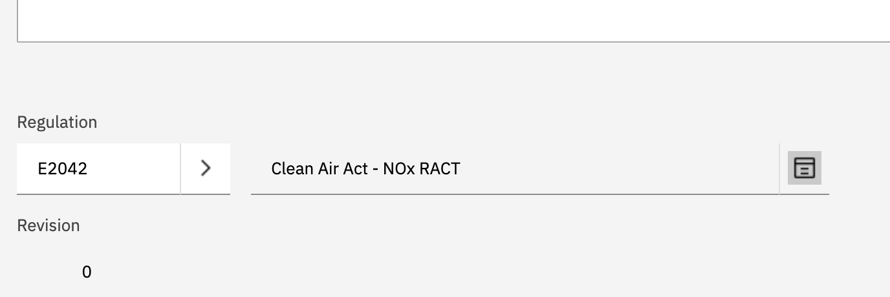
Action: Navigate to the Related Records tab where you can see the work order that detonated this incident as well as the original log and the investigation that was done to further analyze the incident.
Miller knows that if there is a near miss incident, he needs to create an investigation.
Action: Go into the investigation and see that it’s a mandatory root cause analysis and its assigned to Miller.
There are two different techniques that I can use to perform the root cause analysis. One is under the cause analysis tab and has the answers to the 5 Why's. The alternative is the Structured RCA, a systemic root cause analysis technique.
I agree with my team that the 5 Why's analysis technique should be used. This analysis identifies that the basic cause is that the Job Plan for the burner management system service references out of date vendor documentation. The root cause found was that there was Job Plan SOP did not include an engineering review.
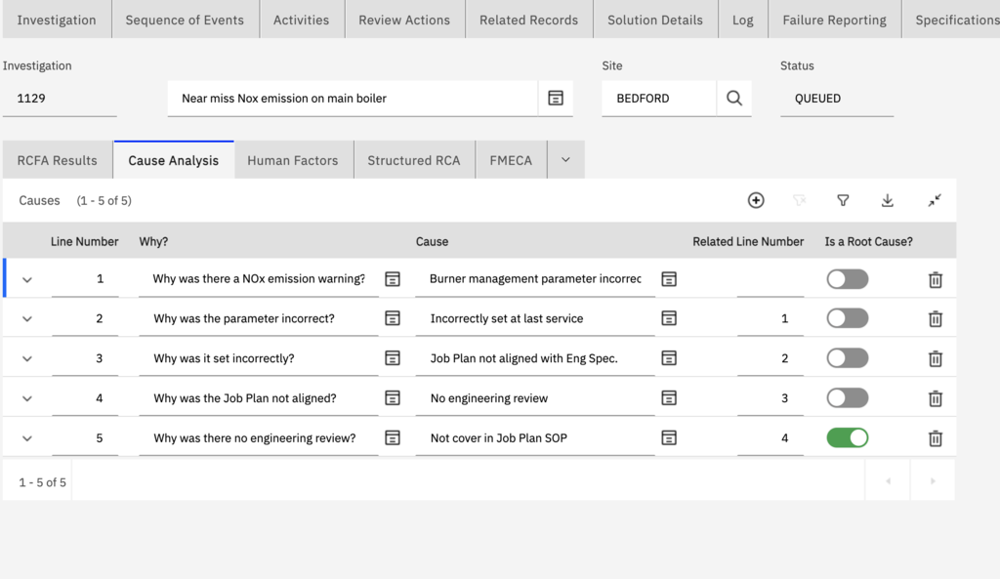
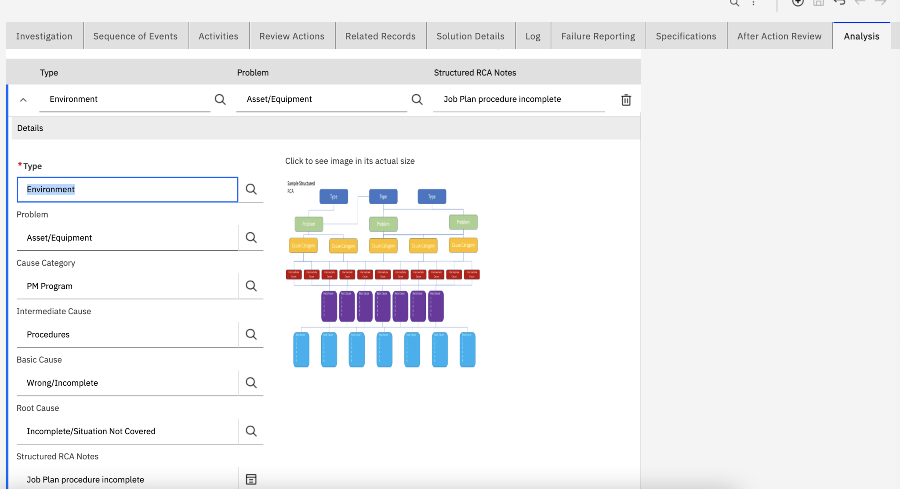
Action: Next I go into the RCFA Results tab where I can add and review the cause of the incident. The RCFA is the summary of what we found from the analysis. Both of the causes have an action required.
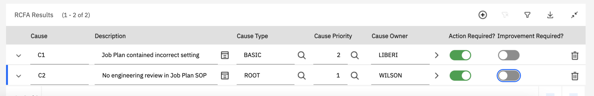
After discussion with engineering, I created a log to identify the opportunity to reduce nox emissions for an upgrade on the boiler control systems.
Action: Move to Related Records tab.
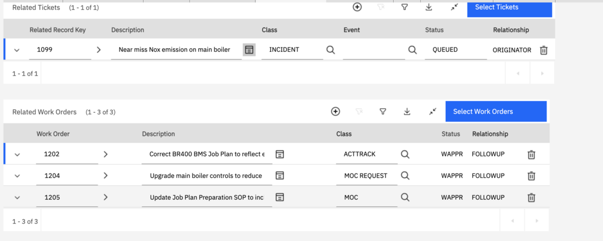
There is an action to correct the Job Plan, this can be done immediately as a follow up to this incident.
I have also added a managements of change (MOC) to update Job Plan Preparation SOP to include engineering review. Having the engineering team review the Job Plan can help prevent high NOx warnings going forward.
I created an MOC Request so that our management team is able to revise the possibility of upgrading the boiler control systems. Although it might be a big investment it might be worth it considering the carbon profile of our assets.
Action: Open MOC Request from the Related Records tab in the Investigations.
Miller, the environmental officer, reviews the request for the MOC and considers it a good idea, so he raises a MOC record.
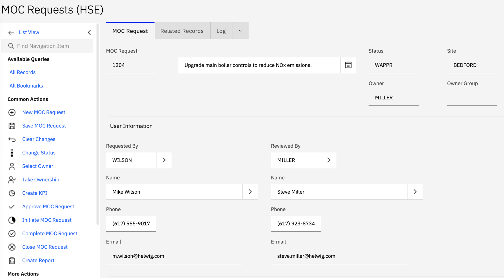
Action: Navigate to Related Records tab, where you can see the MOC.
The MOC now has to be reviewed by Jenise the VP of Sustainability and Kazmier the HSE Manager, and approved by Chris Winter, the VP of Operations. Once approved, the project to upgrade the boiler control system can now begin and hopefully reduce future emissions.
In summary, the high NOx level warning triggered a few actions that will avoid immediate catastrophe as well as prevent future potential emissions by investigating the root cause of the situation. In Part 1, the Control Room Operator adjusted the boiler steam output and created a record of the event. In Part 2, the Maintenance Manager reviewed this event and sent a technician to investigate the problem further and diagnose the reason for it. In Part 3, the Environmental Officer takes the investigation one step further by doing a root cause analysis of the situation and raising an MOC to potentially change how this process works in the future. You can understand the roles and responsibilities of the players at this company and how Maximo can be leveraged for Environmental Monitoring.